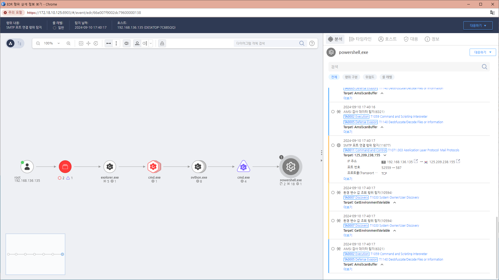

MITRE ATT&CK 액션을 기준으로 대응 방안을 작성
process_name:powershell.exe OR cmd.exe OR wscript.exe OR cscript.exe Action : Network-ConnectToIP OR HTTP-SendGetRequest OR HTTP-SendPostRequest RemotePort : 587

해당 행위를 수행한 프로세스를 종료합니다. 공격자에 의해 PC가 제어되었을 가능성이 있으므로 호스트 네트워크를 격리합니다. 공격자 C&C 서버로 추정되는 주소를 차단합니다.
프록시 설정 강화
DNS 모니터링
애플리케이션 화이트리스트 사용
네트워크 분할
암호화 통신에 대한 감시
Action 실행시 함께 영향을 받는 다른 Techniqes
| ATT&CK |
|---|
| T1059.001 |
| D3FEND |
|---|
| D3-NTA Network Traffic Analysis |
| D3-NTF Network Traffic Filtering |
| D3-FIM File Integrity Monitoring |
| D3-ISL Network Access Mediation |
| D3-IA Identifier Analysis |